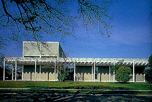
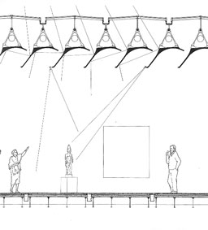
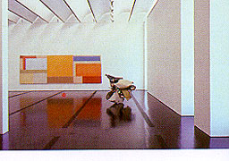
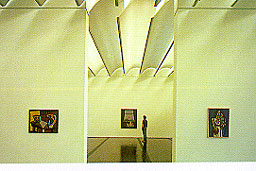

|
De Menil Collection Museum and Cy Twombly Annex, Housten, Texas,
USA, 1981-1986
Renzo Piano


The Architecture of Museums
Francisco Asensio Cerver |
This building is designed around the human scale
and has no pretensions to be monumental. Technology has been
used to make full use of light, context and integration into
nature. The roof allows natural light to come in after a couple
of reflections, so the colour of the light can be manipulated
during the day and the year. So light was a very important element
during the design of the museums. A model of the building was
placed under lambs which reproduce the movement and intensity
of the sun so the effect on the interior could be seen. On the
pictures on the right you can see how daylight comes into the
museum. Under the wooden floor all necessary conditioning facilities
are located. |

 |